11주차 — System-1 Executor Node 설계¶
학습목표
Spot+ATS 시스템을 생각하는 두뇌(System-2) 와 실행하는 몸(System-1) 의 두 계층으로 나누는 아키텍처를 이해하고, System-2가 내려준 고수준 플랜을 실제 물리 행동으로 바꾸는 단위 액션(Unit Action) 의 개념을 익힌다. 나아가 플랜을 검증·실행·모니터링하는 핵심 컴포넌트인 System1ExecutorNode 의 설계 철학과 내부 구조를 분석한다.
출처 (Source)
본 자료의 그림·예제는 교안 「System-1 Executor Node 설계」(제작: ENGI UNIVERSE)를 바탕으로 재구성하였습니다. 코드는 교안의 설명을 충실히 따른 재구성 예제입니다(원본 소스 비공개).
⏱️ 3시간 구성¶
| 교시 | 시간 | 내용 | 근거 교안 |
|---|---|---|---|
| 1교시 | 50분 | Spot+ATS 아키텍처 개요와 System-1 Executor의 역할 | §01 |
| 2교시 | 50분 | 단위 액션 설계 (Unit Action Design) — 6개 액션 | §02 |
| 3교시 | 50분 | System1ExecutorNode 설계 (검증·실행·동시성) & Wrap-up | §03~04 |
🧭 1교시. Spot+ATS 아키텍처 개요와 System-1 Executor의 역할¶
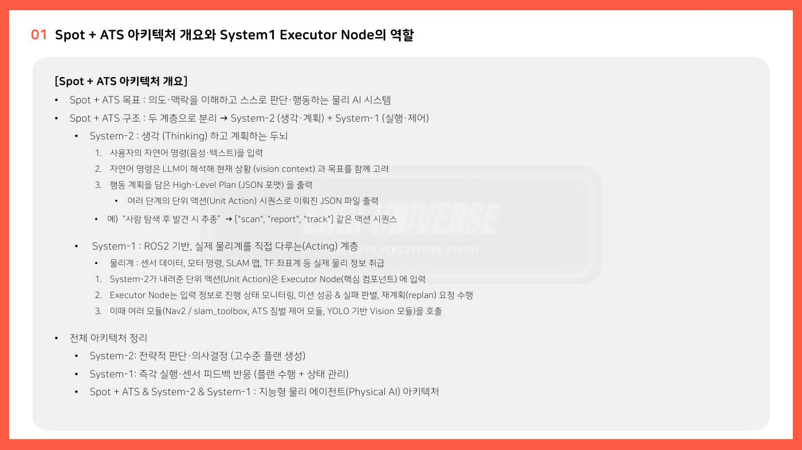
System-1 Executor Node 설계 — 슬라이드 03 (출처: ENGI UNIVERSE)
Spot+ATS의 목표 는 의도·맥락을 이해하고 스스로 판단·행동하는 물리 AI(Physical AI) 시스템 입니다. 이를 위해 시스템을 두 계층으로 분리합니다.
| 계층 | 역할 | 키워드 |
|---|---|---|
| System-2 | 생각(Thinking)하고 계획하는 두뇌 | 전략적 판단·의사결정, 고수준 플랜 생성 |
| System-1 | 실제 물리계를 직접 다루는(Acting) 계층 | 즉각 실행·센서 피드백 반응, 플랜 수행 + 상태 관리 |
System-2 — 생각하고 계획하는 두뇌¶
Step 1 — 사용자의 자연어 명령(음성·텍스트)을 입력받는다. Step 2 — LLM이 명령을 해석해 현재 상황(vision context)과 목표를 함께 고려한다. Step 3 — 행동 계획을 담은 High-Level Plan(JSON 포맷) 을 출력한다.
- 여러 단계의 단위 액션(Unit Action) 시퀀스로 이뤄진 JSON 파일을 출력
- 예) "사람 탐색 후 발견 시 추종" →
["scan", "report", "track"]같은 액션 시퀀스
System-1 — 실제 물리계를 다루는 ROS2 계층¶
System-1은 ROS2 기반으로 센서 데이터, 모터 명령, SLAM 맵, TF 좌표계 등 실제 물리 정보 를 취급합니다.
Step 1 — System-2가 내려준 단위 액션을 Executor Node(핵심 컴포넌트) 에 입력한다. Step 2 — Executor Node가 입력 정보로 진행 상태 모니터링, 미션 성공·실패 판별, 재계획(replan) 요청을 수행한다. Step 3 — 이때 여러 모듈(Nav2/slam_toolbox, ATS 짐벌 제어 모듈, YOLO 기반 Vision 모듈)을 호출한다.
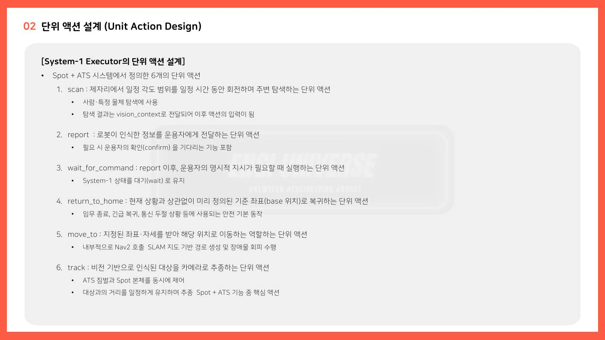
System-1 Executor Node 설계 — 슬라이드 05 (출처: ENGI UNIVERSE)
전체 아키텍처 정리
- System-2: 전략적 판단·의사결정 (고수준 플랜 생성)
- System-1: 즉각 실행·센서 피드백 반응 (플랜 수행 + 상태 관리)
- Spot+ATS & System-2 & System-1: 지능형 물리 에이전트(Physical AI) 아키텍처
🧩 2교시. 단위 액션 설계 (Unit Action Design)¶
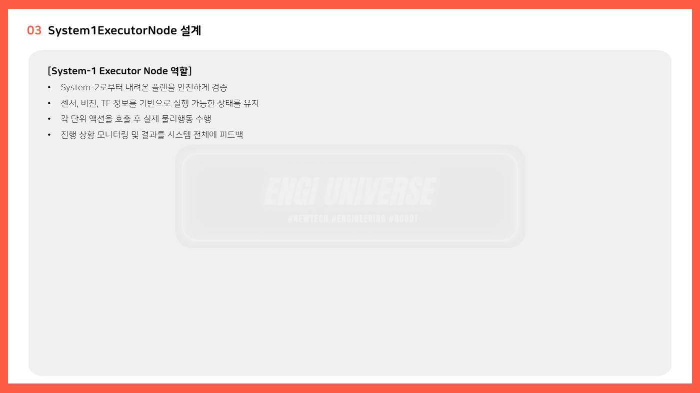
System-1 Executor Node 설계 — 슬라이드 07 (출처: ENGI UNIVERSE)
단위 액션(Unit Action)이란?¶
- 더 이상 쪼갤 수 없는 최소 실행 단위 — 하나의 액션이 끝나야 다음 액션으로 진행하는 구조
- System-2가 만든 고수준 플랜을 실제 물리 행동으로 바꾸는 핵심 요소
- 단위 액션의 원칙: "하나의 액션 = 하나의 명확한 목적"
왜 단위 액션이 중요할까?
- 복잡한 액션을 레고처럼 조합 해 사용 가능하며, 쉽게 시나리오 생성 가능
- 실행 중 오류 발생 시 디버깅·재계획(replan)이 쉬움
- 전체 행동 파이프라인이 모듈형(Modular) 으로 유지됨
Spot+ATS 시스템에서 정의한 6개의 단위 액션¶
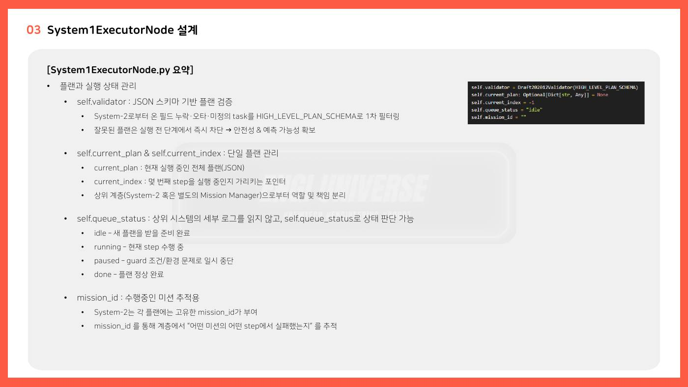
System-1 Executor Node 설계 — 슬라이드 09 (출처: ENGI UNIVERSE)
| # | 액션 | 설명 |
|---|---|---|
| 1 | scan |
제자리에서 일정 각도 범위를 일정 시간 동안 회전하며 주변을 탐색. 결과는 vision_context 로 전달되어 이후 액션의 입력이 됨 |
| 2 | report |
로봇이 인식한 정보를 운용자에게 전달. 필요 시 운용자의 확인(confirm)을 기다리는 기능 포함 |
| 3 | wait_for_command |
report 이후 운용자의 명시적 지시가 필요할 때 실행. System-1 상태를 대기(wait) 로 유지 |
| 4 | return_to_home |
현재 상황과 무관하게 미리 정의된 기준 좌표(base 위치)로 복귀. 임무 종료·긴급 복귀·통신 두절 등에 쓰는 안전 기본 동작 |
| 5 | move_to |
지정된 좌표·자세로 이동. 내부적으로 Nav2를 호출 해 SLAM 지도 기반 경로 생성 및 장애물 회피 수행 |
| 6 | track |
비전 기반으로 인식된 대상을 카메라로 추종. ATS 짐벌과 Spot 본체를 동시에 제어, 대상과의 거리를 일정하게 유지 — Spot+ATS의 핵심 액션 |
단위 액션 구조를 명확히 정의하는 이유
- 명확한 분리 로 System-2의 플랜 생성이 쉬워짐
- System-1에서 유지·관리·디버깅이 쉬움
- 확장성 이 매우 높아짐
⚙️ 3교시. System1ExecutorNode 설계¶
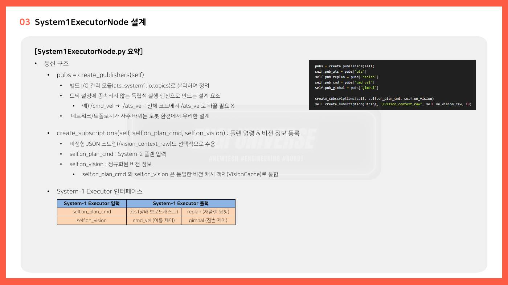
System-1 Executor Node 설계 — 슬라이드 12 (출처: ENGI UNIVERSE)
System-1 Executor Node의 역할¶
- System-2로부터 내려온 플랜을 안전하게 검증
- 센서, 비전, TF 정보를 기반으로 실행 가능한 상태를 유지
- 각 단위 액션을 호출 후 실제 물리 행동 수행
- 진행 상황 모니터링 및 결과를 시스템 전체에 피드백
TF 초기화 — "자기 위치를 모르는 위험"을 조기 감지¶
# TF 초기화: 다른 노드에 의존하지 않아도 바로 최신 Pose 사용 가능
self.tf_listener # TF 변환 리스너
self._last_pose # 최신 Pose 캐시 (ok: 신뢰 가능 여부 포함)
# 1초마다 map → body 변환을 조회
self.create_timer(1.0, self._log_tf_pose)
- 변환 성공 →
_last_pose갱신 - 변환 실패 →
_last_pose["ok"] = False설정 + 경고 출력
TF 초기화의 설계 의도
실행 중인 모든 단위 액션이 신뢰 가능한 최신 포즈 를 참조하도록 유지하고, TF 체인 이상·시뮬레이터/실기 셋업 오류를 즉시 감지한다. → Executor는 '자기 위치를 모르는 상태에서 행동하는 위험'을 조기에 감지·회피 하도록 설계된 실행기다.
플랜과 실행 상태 관리¶
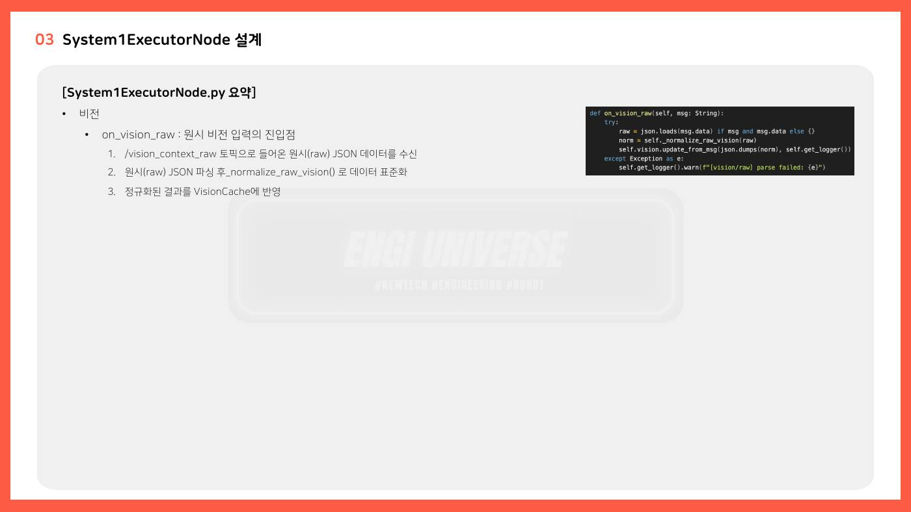
System-1 Executor Node 설계 — 슬라이드 14 (출처: ENGI UNIVERSE)
| 변수 | 역할 |
|---|---|
self.validator |
JSON 스키마 기반 플랜 검증. System-2의 필드 누락·오타·미정의 task를 HIGH_LEVEL_PLAN_SCHEMA 로 1차 필터링 → 잘못된 플랜은 실행 전 즉시 차단 |
self.current_plan |
현재 실행 중인 전체 플랜(JSON) |
self.current_index |
몇 번째 step을 실행 중인지 가리키는 포인터 |
self.queue_status |
상세 로그를 읽지 않고 상태를 판단하게 하는 상태값 |
mission_id |
수행 중인 미션 추적용. 각 플랜에 고유 ID 부여 → "어떤 미션의 어떤 step에서 실패했는지" 추적 |
queue_status 의 상태 값
idle— 새 플랜을 받을 준비 완료running— 현재 step 수행 중paused— guard 조건/환경 문제로 일시 중단done— 플랜 정상 완료
Guard 조건과 실행 제약¶
# eval_guard(): 플랜 실행 전 동작 변수를 평가하는 관리 함수
ROU_OK # 사용자 규칙 충족 여부
SAFE_BACKSTOP # 안전구역 확보 여부
BATTERY_SOC # 배터리 잔량
MAX_SPEED # 동작 속도 제한
Guard 조건이 False인 경우 (예: 배터리 부족 / 안전 구역 미확보)
- 해당 step 실행을 중단하고 상태를
paused/error로 전환 - 필요 시 상위 시스템(System-2)에 재계획 요청
파라미터로 분리된 환경 의존 값¶
- Executor의 이식성과 확장성 향상
- 환경이나 base 위치 변경 시 재빌드 필요 없음
- 환경 의존 값을 코드와 분리 → 어떤 로봇 플랫폼에서도 그대로 재활용 가능한 핵심 설계
통신 구조¶
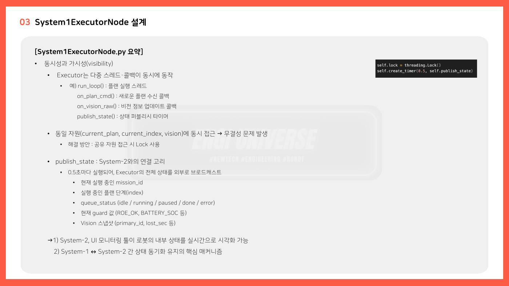
System-1 Executor Node 설계 — 슬라이드 17 (출처: ENGI UNIVERSE)
# 별도 I/O 관리 모듈(ats_system1.io.topics)로 분리 → 토픽 설정에 종속되지 않는 독립 실행 엔진
pubs = create_publishers(self)
# 플랜 명령 & 비전 정보 등록
create_subscriptions(self, self.on_plan_cmd, self.on_vision)
# self.on_plan_cmd : System-2 플랜 입력
# self.on_vision : 정규화된 비전 정보 (동일한 VisionCache로 통합)
# 비정형 JSON 스트림(/vision_context_raw)도 선택적으로 수용
- 토픽명이 바뀌어도(예:
/cmd_vel→/ats_vel) 전체 코드를 고칠 필요 없음 → 네트워크/토폴로지가 자주 바뀌는 로봇 환경에 유리
System-1 Executor 인터페이스
| 입력 | 출력 |
|---|---|
self.on_plan_cmd (System-2 플랜) |
ats (상태 브로드캐스트) |
self.on_vision (비전 정보) |
replan (재플랜 요청) |
cmd_vel (이동 제어) |
|
gimbal (짐벌 제어) |
비전 — VisionCache와 정규화¶
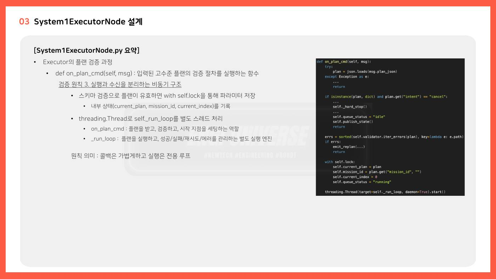
System-1 Executor Node 설계 — 슬라이드 19 (출처: ENGI UNIVERSE)
# 표준화된 비전 상태 저장소: 단순 버퍼가 아니라 감지 객체 상태를 정규화해 저장하는 중앙 저장소
VisionCache(self._frame_w_default, self._frame_h_default)
# 다양한 비전 출력 포맷을 하나의 표준 구조로 통합하는 핵심 함수
def _normalize_raw_vision(self, raw): ...
# 원시 비전 입력의 진입점
def on_vision_raw(self, msg):
# 1) /vision_context_raw 토픽의 원시(raw) JSON 수신
# 2) 파싱 후 _normalize_raw_vision()으로 표준화
# 3) 정규화 결과를 VisionCache에 반영
...
정규화 데이터 구조
| 필드 | 의미 |
|---|---|
targets |
감지된 모든 객체 리스트. 요소는 id(식별자), class(YOLO class name), bbox([x,y,w,h] 중심기준), range(거리 z, 선택) |
primary_id |
가장 먼저 감지된 주요 객체. center(cx, cy) 포함 → track/report의 "주 대상" |
lost_sec |
아무 객체도 감지되지 않은 누적 시간. 값이 커지면 "타깃 손실" 판단 → 다음 액션 전환 트리거 |
비전 모듈 설계 핵심 의도
- 모델 독립성(Model Independence) — YOLOv8 → YOLOv10 교체 시
_normalize_raw_vision()만 수정하면 됨 - 데이터 일관성·해석 가능성 — 비전 데이터가 불안정하면 System-2의 플랜 품질도 저하됨
→
_normalize_raw_vision와on_vision_raw덕분에 Executor가 특정 비전 알고리즘에 종속되지 않고 범용 실행 엔진 으로 유지된다.
추적(Tracking)과 이동(Navigation)의 위임¶
# 책임 위임: Executor는 "언제 시작·성공/실패 판단·재시도/재플랜 시점"만 결정
track -> Tracker # 카메라 중심 기준 타깃 추적: 짐벌(pitch, yaw) + 본체(vx, wz) 동시 계산
move_to -> Nav2Navigator # Nav2를 직접 호출, 내부 상태(goal_reached, aborted)는 Navigator가 처리
DepthBuffer # 깊이 센서 데이터 실시간 관리 → "현재 타깃까지 거리" 즉시 조회
- 위임 이유 1 — Executor는 시작 시점·성공/실패 판단·재시도/재플랜 시점만 결정
- 위임 이유 2 — 기능 업데이트가 발생해도 플랜 실행 로직은 수정 불필요
- Executor는 Navigator가 제공하는 최소 상태(
_nav_feedback:distance_remaining,stamp등)만 참조 → "도달/실패/재시도/재플랜" 판단에만 집중 해 복잡도 최소화
동시성과 가시성(Visibility)¶
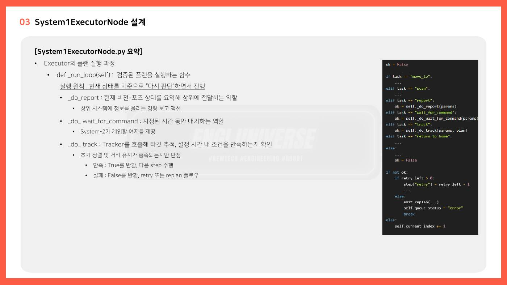
System-1 Executor Node 설계 — 슬라이드 22 (출처: ENGI UNIVERSE)
# Executor는 다중 스레드·콜백이 동시에 동작
run_loop() # 플랜 실행 스레드
on_plan_cmd() # 새로운 플랜 수신 콜백
on_vision_raw() # 비전 정보 업데이트 콜백
publish_state() # 상태 퍼블리시 타이머
- 동일 자원(
current_plan,current_index,vision)에 동시 접근 → 무결성 문제 발생 - 해결: 공유 자원 접근 시 Lock 사용
publish_state — System-2와의 연결 고리
0.5초마다 실행되어 Executor 전체 상태를 외부로 브로드캐스트한다: 현재 mission_id, 실행 중인 플랜 단계(index), queue_status, 현재 guard 값, Vision 스냅샷(primary_id, lost_sec).
→ System-2·UI 모니터링 툴이 로봇 내부 상태를 실시간 시각화하고, System-1 ↔ System-2 상태 동기화 를 유지하는 핵심 메커니즘.
Executor의 플랜 검증 과정 — on_plan_cmd¶
def on_plan_cmd(self, msg):
# 원칙 1. 플랜의 신뢰성을 코드 수준에서 강제
plan = json.loads(msg.plan_json) # 파싱 실패 → 실패 로그 반환
for err in self.validator.iter_errors(plan): # HIGH_LEVEL_PLAN_SCHEMA 검증
self.emit_replan(...) # 오류 시 재계획 요청 + 플랜 제거
return
# 원칙 2. cancel을 최우선 인터럽트로 취급
if isinstance(plan, dict) and plan.get("intent") == "cancel":
self._hard_stop() # 프로세스 종료 X, 상태만 idle로 → 제어권 회수
return
# 원칙 3. 실행과 수신을 분리하는 비동기 구조
with self.lock:
self.current_plan = plan # current_plan, mission_id, current_index 기록
...
threading.Thread(target=self._run_loop).start() # 실행은 전용 루프로
| 검증 원칙 | 의미 |
|---|---|
| 1. 스키마 검증 | "LLM이 생성해도, 규격을 만족하지 않으면 실행하지 않는다" → 물리 시스템의 첫 번째 안전장치 |
| 2. cancel 인터럽트 | 상위 시스템이 중단을 요청할 때 즉각 반응 → 제어권 회수 |
| 3. 비동기 분리 | 콜백은 가볍게, 실행은 전용 루프(_run_loop)로 |
Executor의 플랜 실행 과정 — _run_loop¶
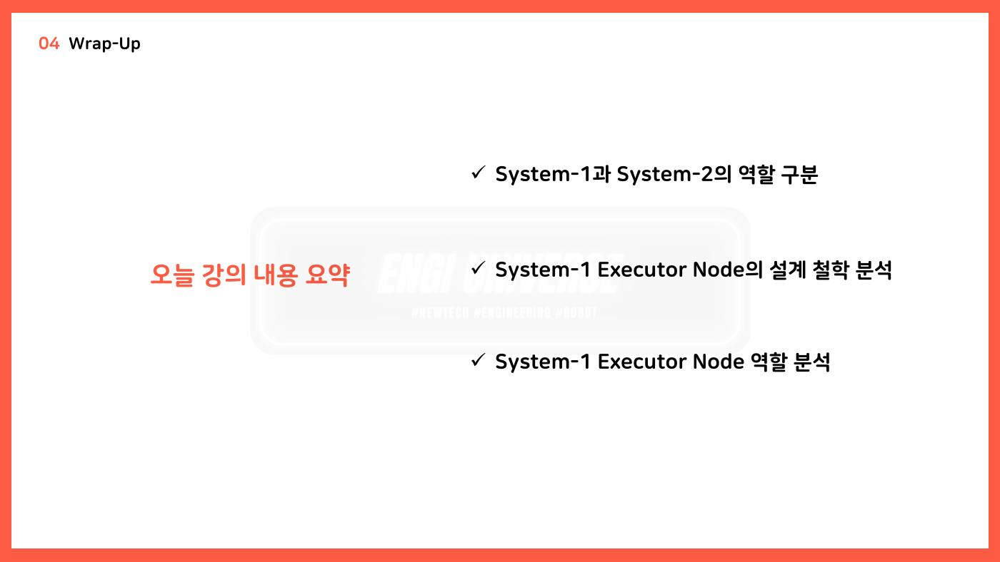
System-1 Executor Node 설계 — 슬라이드 24 (출처: ENGI UNIVERSE)
def _run_loop(self):
with self.lock: # 이중 검증: current_plan, current_index, queue_status 로드
...
if plan is None or status != "running": # 플랜 없거나 running 아니면 즉시 종료
return
if idx >= len(steps): # step 배열 범위 초과 → 종료
self.queue_status = "done"
return
ok = False # 초기화 후 task 분기
# move_to -> exec_move_to() | scan -> exec_scan() | report -> _do_report()
# wait_for_command -> _do_wait_for_command() | track -> _do_track()
# return_to_home -> home 좌표 goal로 변환 후 exec_move_to()
각 Step의 4요소 — System-2와 System-1 사이의 최소 실행 단위 계약
| 요소 | 의미 |
|---|---|
task |
수행할 단위 액션 이름 |
params |
해당 액션에 필요한 인자 |
guard |
안전 조건 체크 (BATTERY_SOC, SAFE_BACKSTOP 등) — 불만족 시 paused |
retry |
실패 재시도 횟수 |
True/False 계약에 따른 플로우 제어
True→current_index += 1후 다음 step 실행False→ retry 확인 후 남은 재시도가 있으면 같은 step 반복 → retry 소진 시emit_replan(...)호출 +queue_status = "error"
플랜 실행 설계의 보장 사항
- 안전 조건을 만족할 때까진 해당 step을 절대 실행하지 않는다
- 일시 정지 상태를 상위에서 해석·재개할 수 있도록 남겨둔다
- 설계 장점: ① 단위 액션이 늘어나도
_run_loop로직은 고정 ② 액션 내부 구현이 바뀌어도 True/False 계약만 맞으면 재사용 ③ 실패·재시도·재플랜이 모든 액션에 일관된 방식 으로 동작
개별 액션 동작 요약
_do_report— 현재 비전·포즈 상태를 요약해 상위에 전달하는 경량 보고 액션_do_wait_for_command— 지정된 시간 동안 대기 → System-2가 개입할 여지 제공_do_track— Tracker를 호출해 추적, 설정 시간 내 초기 정렬·거리 유지 충족 여부만 판정 (만족 → True, 실패 → False)
상태 문자열과 publish_state¶
def state_string(self) -> str:
# running 상태 + 유효 플랜/인덱스 → 현재 task 반환 (move_to / track ...)
# 미실행 or No 플랜 or 무효 인덱스 → queue_status 반환 (idle/paused/done/error)
...
def publish_state(self):
# 다음 항목을 하나의 상태 메시지로 통합 발송:
# state_string(), _last_pose(위치·yaw), mission_id,
# queue_status, guard 심볼(BATTERY_SOC 등), vision_snapshot
...
🧷 Wrap-up¶

System-1 Executor Node 설계 — 슬라이드 25 (출처: ENGI UNIVERSE)
- System-1과 System-2의 역할 구분 — 두뇌(생각·계획)와 몸(실행·제어)의 분리
- System-1 Executor Node 역할 — 플랜 검증 → 실행 가능 상태 유지 → 단위 액션 호출 → 결과 피드백
- 설계 철학 — 환경 의존 값 분리(이식성), 비전·추적·내비게이션 위임(독립성), True/False 계약(일관성), Lock·guard(안전성·무결성)
✅ 체크포인트¶
- System-2(두뇌)와 System-1(몸)의 역할 구분을 설명할 수 있는가
- 단위 액션의 정의와 6개 액션(scan/report/wait_for_command/return_to_home/move_to/track)을 설명할 수 있는가
-
queue_status의 상태값(idle/running/paused/done/error)과 전환 조건을 이해했는가 -
on_plan_cmd의 3가지 검증 원칙(스키마·cancel·비동기 분리)을 설명할 수 있는가 - 각 Step의 4요소(task/params/guard/retry)와 True/False 실행 계약을 이해했는가
📊 평가 루브릭¶
| 항목 | 배점 | 기준 |
|---|---|---|
| 아키텍처 이해 | 20 | System-2/System-1 2계층 분리와 Executor의 위치를 정확히 설명 |
| 단위 액션 설계 | 20 | 6개 단위 액션의 목적과 "1액션=1목적" 원칙·모듈성을 설명 |
| 플랜 검증·실행 | 25 | on_plan_cmd 검증 원칙과 _run_loop의 True/False 계약·재시도/재플랜 흐름 이해 |
| 비전·위임 설계 | 20 | VisionCache 정규화, Tracker·Nav2Navigator 위임의 설계 의도 설명 |
| 동시성·안전성 | 15 | Lock·guard·publish_state를 통한 무결성·상태 동기화 메커니즘 설명 |
🔗 출처 및 참고자료¶
- 교안 「System-1 Executor Node 설계」 (제작: ENGI UNIVERSE) — 강의 슬라이드 원본
- ROS 2 Documentation — https://docs.ros.org
- Nav2 (Navigation2) — https://docs.nav2.org
- Ultralytics YOLO — https://docs.ultralytics.com
🖼️ 원본 강의 슬라이드¶
원본 강의 슬라이드 전체 (25매)
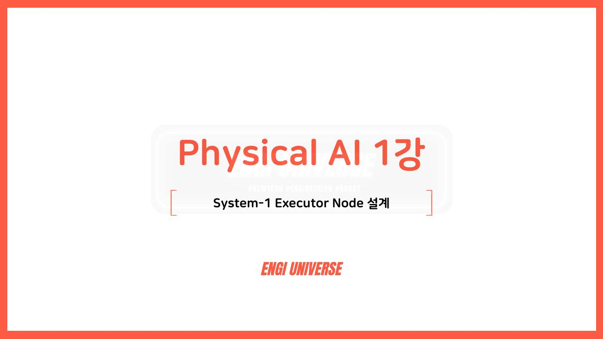
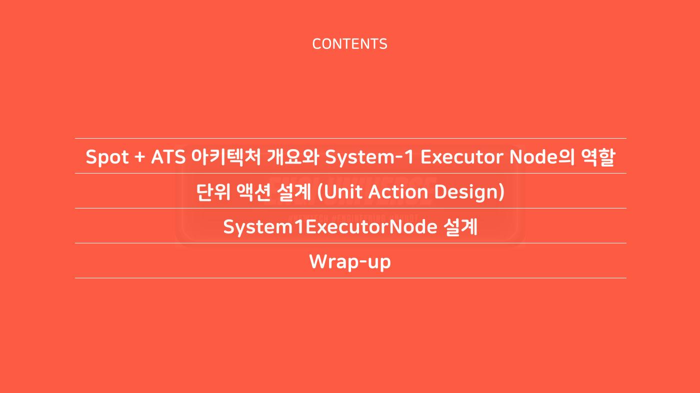
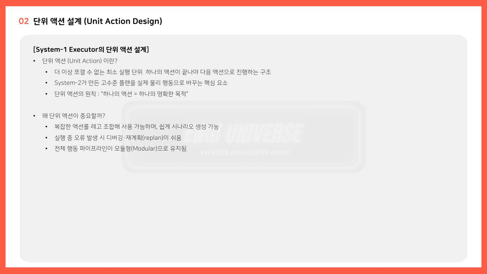
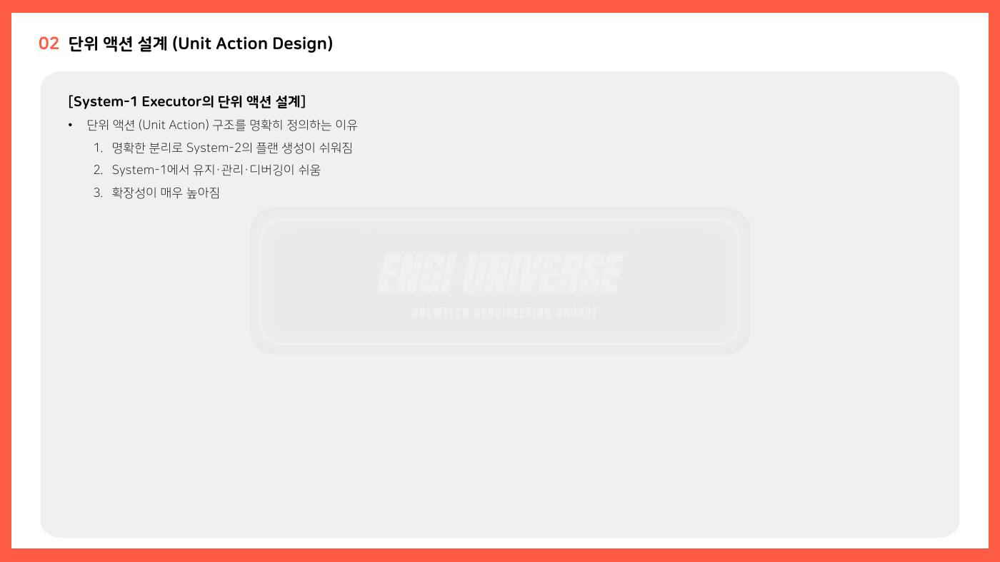
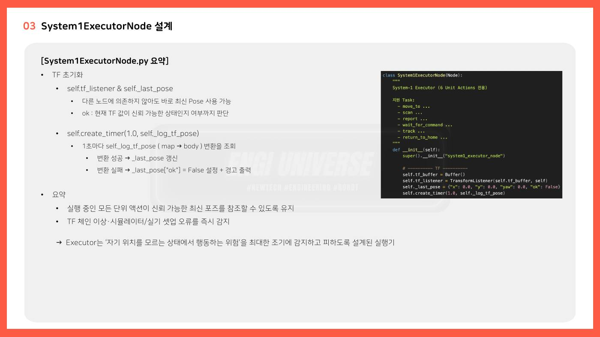
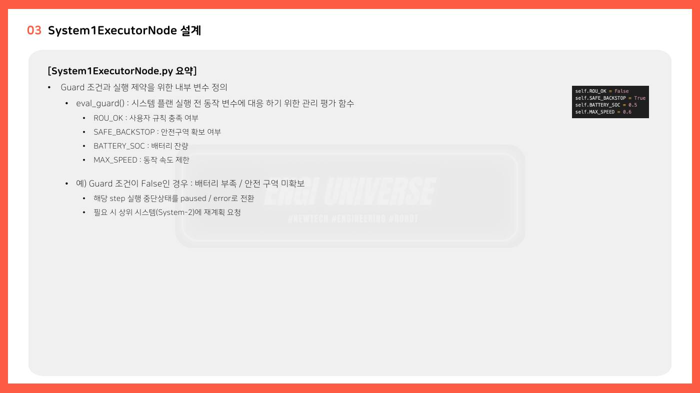
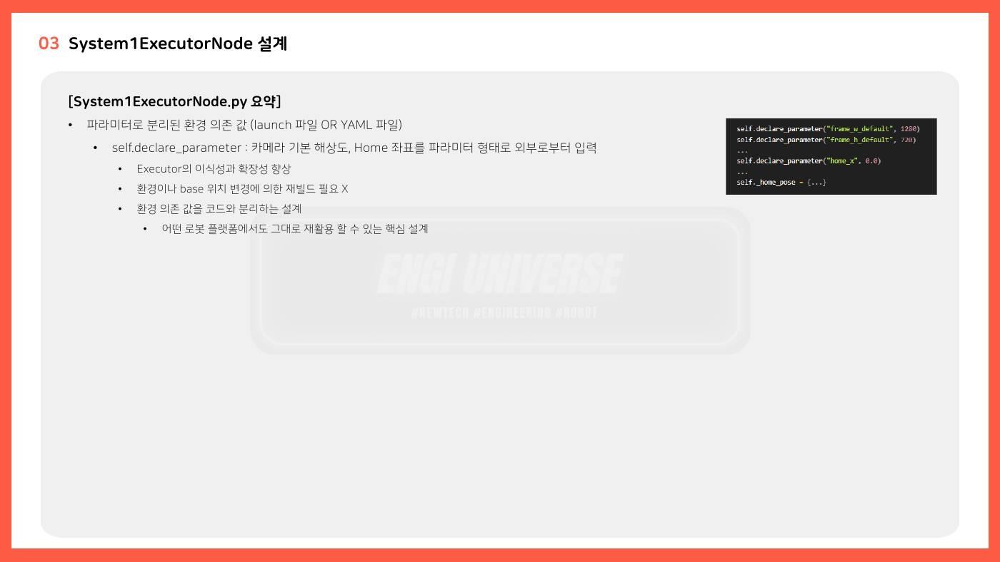
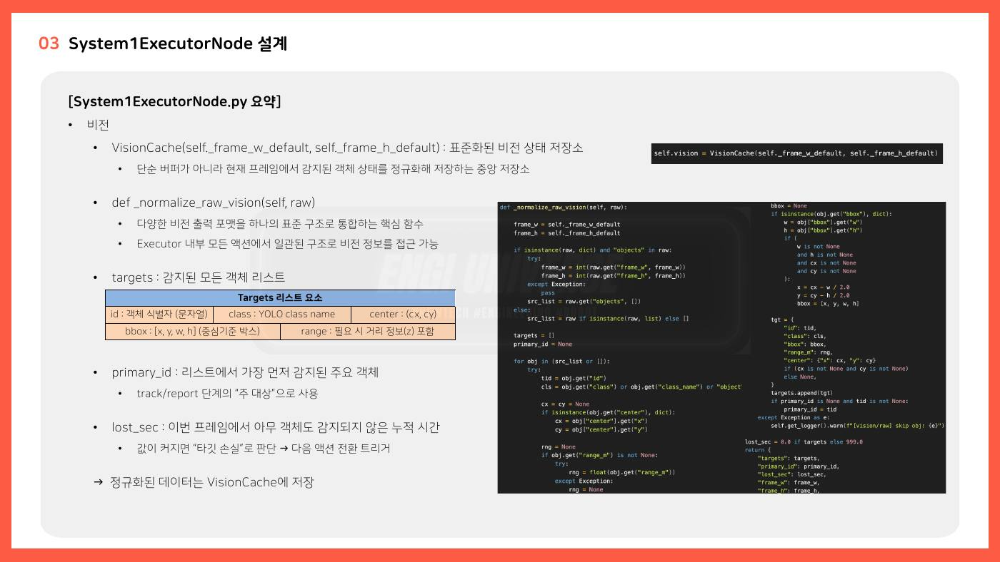
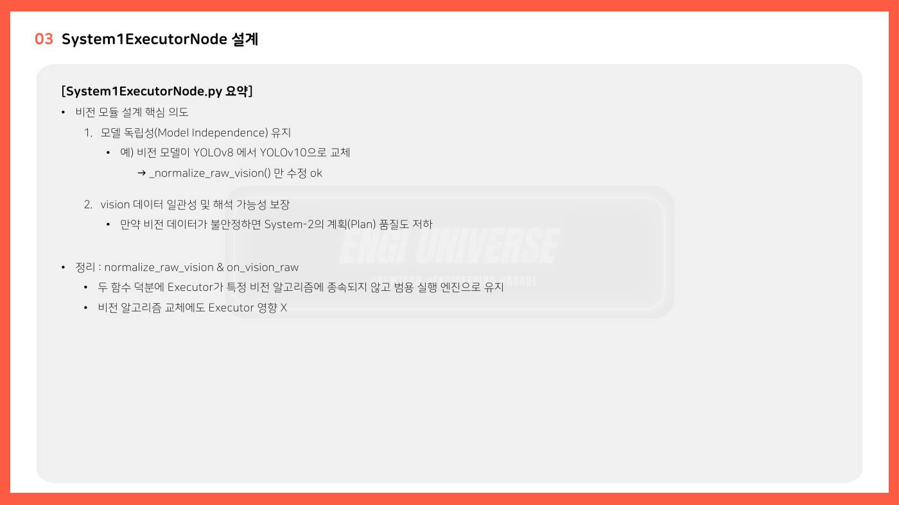
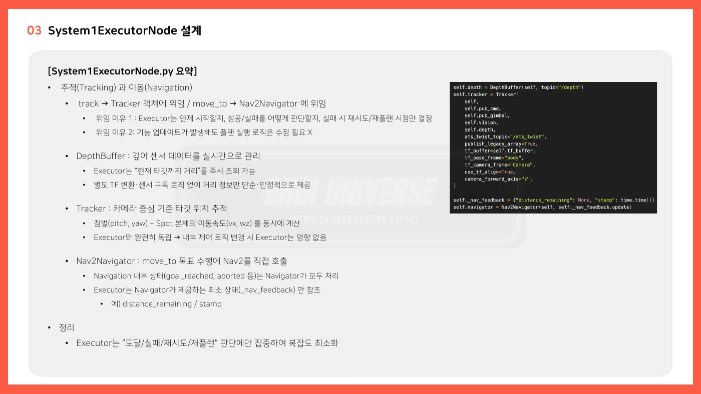
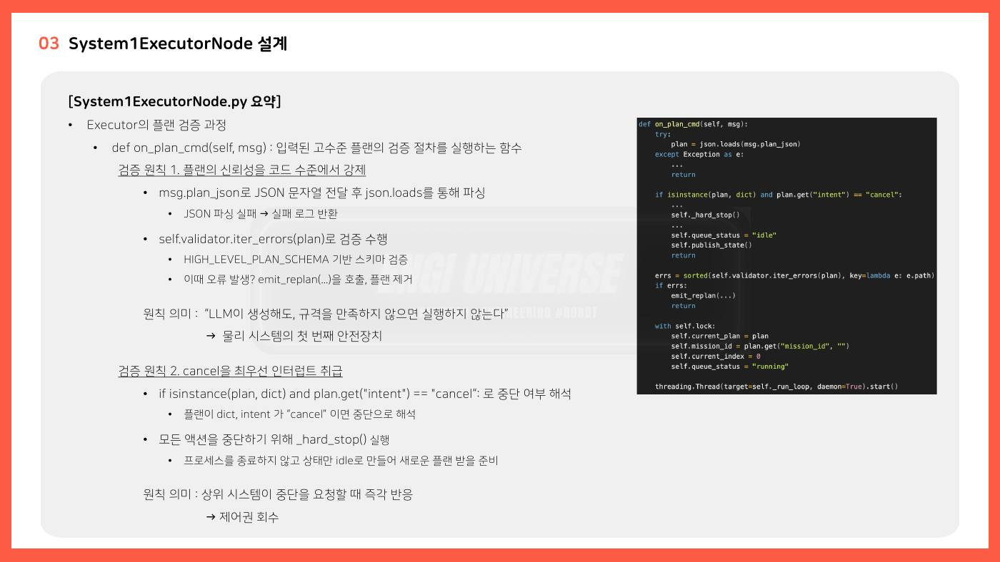
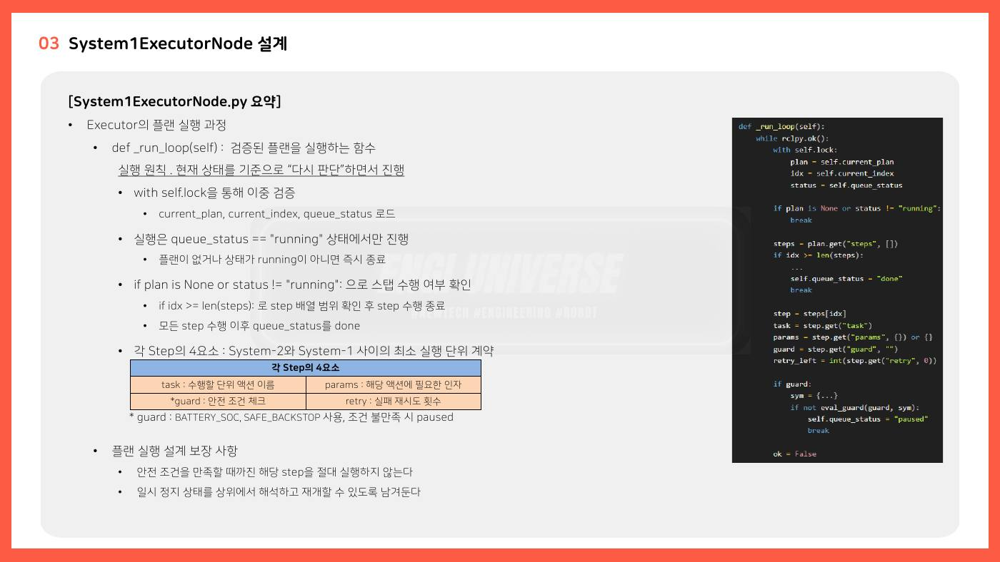
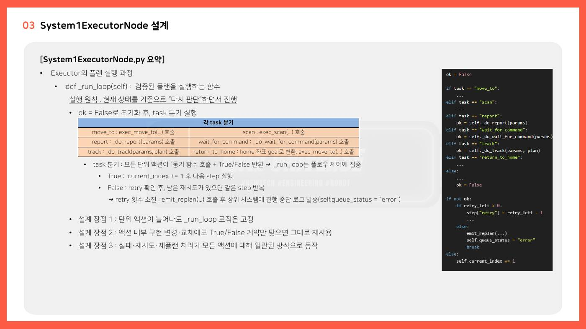
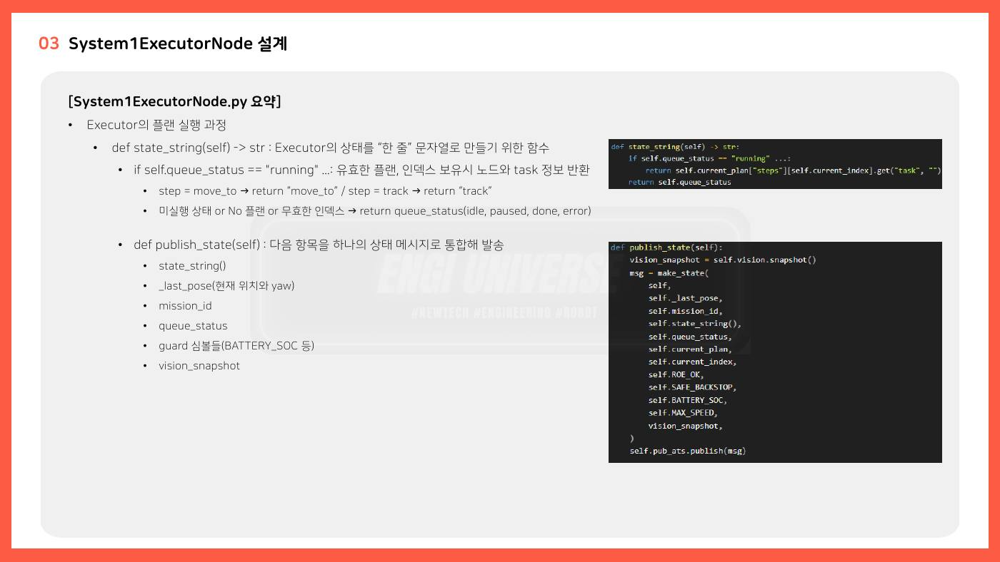